正文:
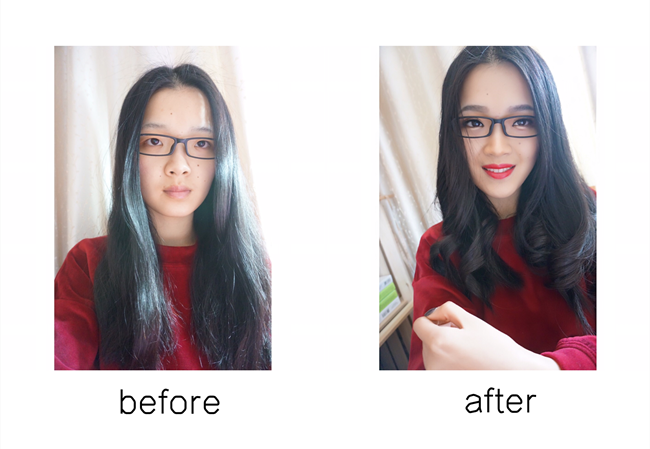谢邀，没错我就是要用自己的经验和照片证明，
「是否佩戴眼镜」并不是影响颜值的关键因素，
「化妆」才是。
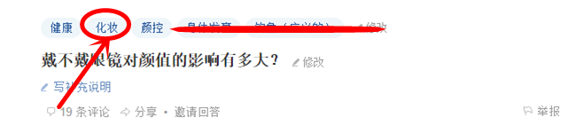
作为一个用心良苦的答主我也必须呈现效果与教程同步的一条龙服务，所以，
如何通过妆容改变佩戴眼镜时的颜值以及
佩戴眼镜上妆需要注意什么，将在下面的教程中呈现。
·底妆常见问题「脱妆」尤其是框架眼镜与肌肤接触的位置，所以对底妆的诉求是细腻持久，妆面干爽。并且佩戴框架眼镜后，不便随时补妆，所以在底妆上我们要花点小心思了。
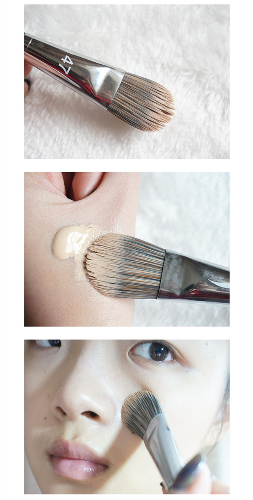上妆工具上我选择了粉底刷，它的遮瑕力会比用手直接上更好，但我没有选择斜头粉底刷或者平头粉底刷，而是
选择舌形刷，这类刷型较小，更能照顾细节，比如鼻翼，鼻梁，嘴角等等。
但使用方法也更加细致，要先用刷头蘸取粉底液，而不是直接上脸，让刷头充分均匀沾湿后，再对面部进行上妆，可以不留粉痕以外，妆感轻薄但不失遮瑕力，当然用时会稍长一点。
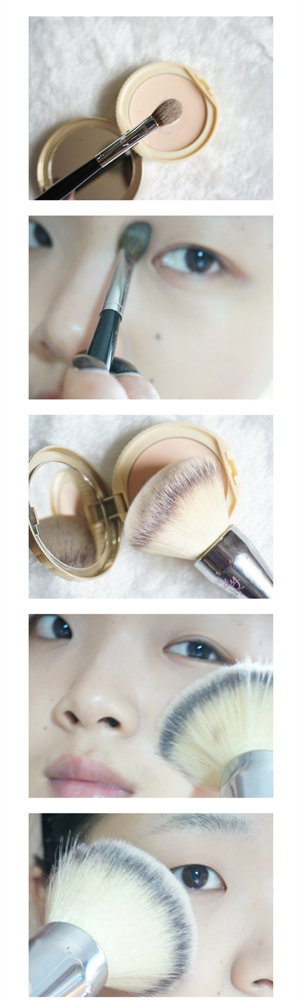因为面部没有明显的瑕疵，以及舌形刷上妆能够进行简单的遮瑕，所以没有单独遮瑕步骤。
粉底以后就用蜜粉定妆，我选择了一把圆头眼影刷，蘸取蜜粉轻轻扫在眼镜镜托与鼻梁常接触的位置，避免多次摩擦蹭掉底妆，再用大号散粉刷进行面部定妆。眼下与镜框、太阳穴附近与镜腿可能接触的地方反复扫过蜜粉。
·眉毛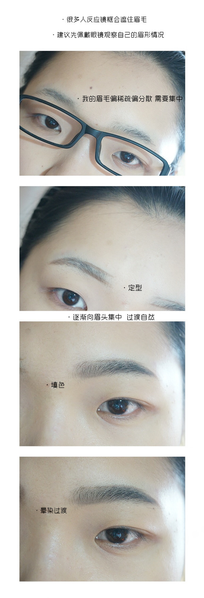画眉的方法跟平时没有差异，就是最好眉毛的位置是在镜框之上，会显得人有神一些，所以先佩戴眼镜观察一下，然后确定好眉形。
·鼻影很多人都纠结佩戴框架眼镜到底要不化鼻影，当然本身鼻梁条件好的人可以忽略不顾，直接跳过这一环节，但大部分亚洲人尤其偏南地区，鼻梁线条并不是很理想，比如我，所以还是选择保持这个环节，那么，我是怎么完成的？
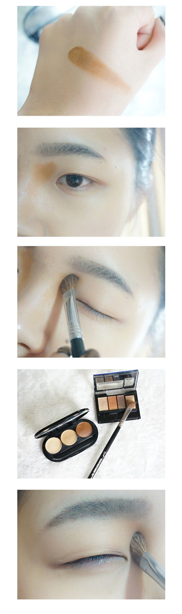在这一步我选择了修容膏+少量阴影粉的方法，修容膏比较显色，并且持久，但是容易蹭花，所以我在晕染开之后再用鼻影刷蘸取少量阴影粉（这里用的是KATE骨干重塑眼影里的鼻影色）。简而言之就是给鼻影定妆，让它更持久。
·眼影/眼线拍眼妆的时候糊了，图不重要，主要看步骤，很明显当我们佩戴眼镜之后会发现眼妆的效果被削弱了，其原因一个是镜框遮挡，一个是镜面反光。
所以眼妆的部分可以适当加重一点，但是还是不失日常，所以还是选择大地色的常规眼影色以及黑色眼线膏进行处理。
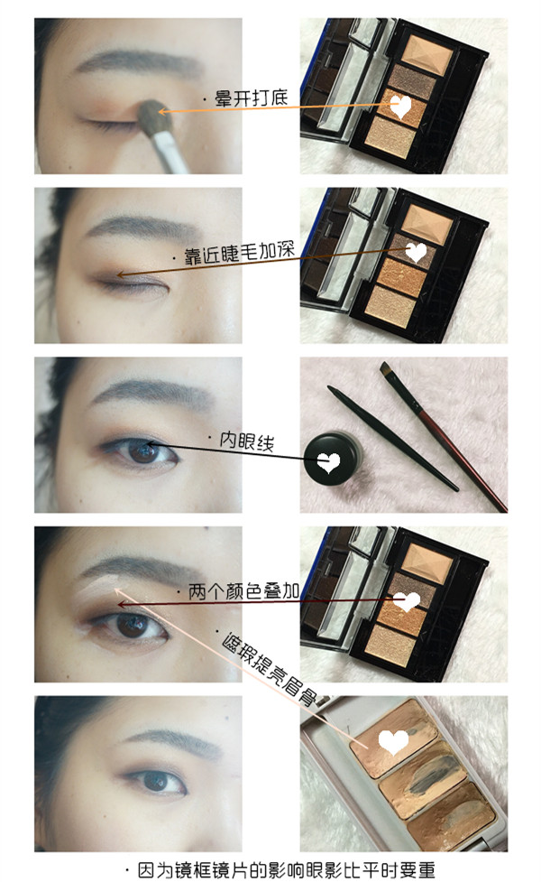眼妆重不等于妆面脏，所以最后用一点点亮色遮瑕膏在眼周以及眉骨部分进行处理，这样妆面更加干净，眼妆也更加显色。
·睫毛睫毛通常遇到的情况就是太长，扎到眼镜镜片，这是睫毛向前生长引起的，所以尽可能让睫毛向上翘，平时这样处理可能会有些不自然，但是因为镜片遮挡等等原因，睫毛稍稍夸张一点并不引人注目，反而增加了眼妆的存在感。
而为了这种翘度保持的足够持久我选择用电烫睫毛器，然后刷睫毛膏，之后再烫一次，那么翘度可以维持一整天。
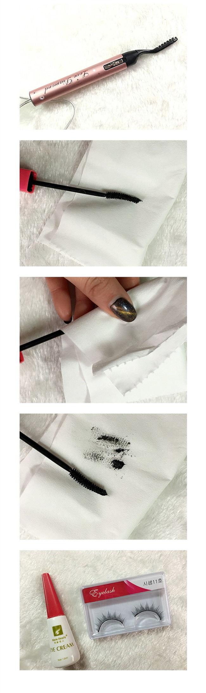因为佩戴眼镜，睫毛膏不易太浓，可以先用纸巾按压一下刷头，带走多余的膏体，让刷头的刷齿分明，这样不会让睫毛粘附过多的膏体甚至弄脏镜片。个人习惯，之后会佩戴假睫毛，因人而异这一步不是必须的。
·卧蚕贴好假睫毛后用眼线液笔稍稍填补真假睫毛间的空隙，然后是通过画卧蚕增加眼睛的存在感，卧蚕主要在眼部前三分之后的部分，不用过长，这样显得眼睛更圆，有更好的扩大效果。
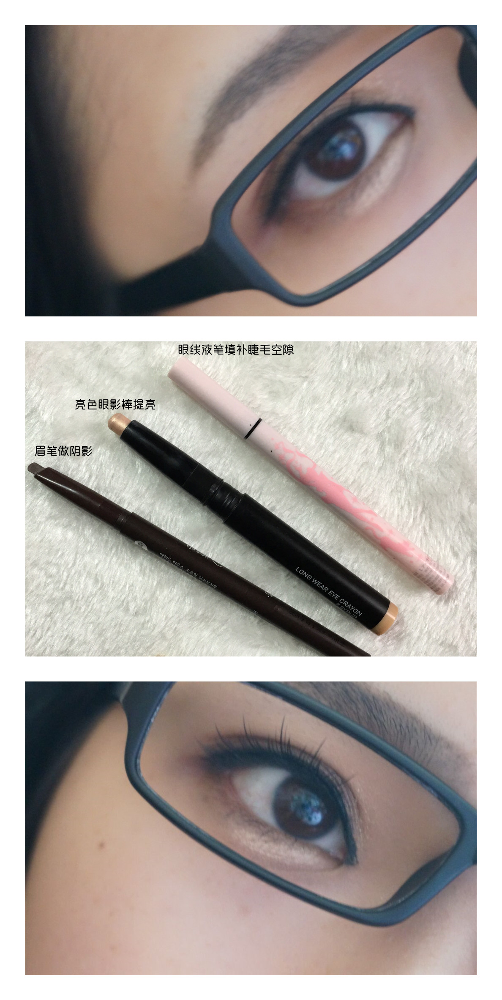先用提亮在眼线需要突出卧蚕的部分进行处理，之后选择一个阴影色，在下方轻轻刻画一个线条然后晕开，这个线条我用眉笔处理的刚好，注意用棕色的眉笔比较自然，灰色则容易显脏。
·修容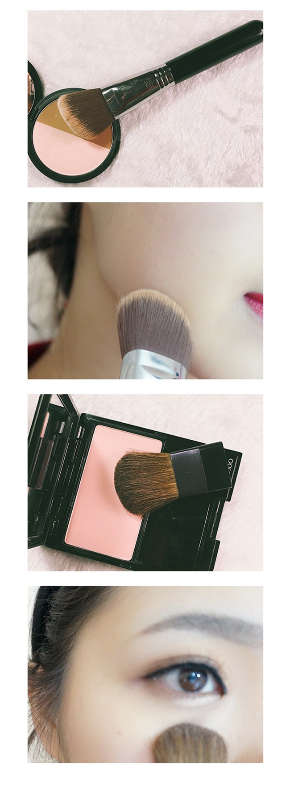很简单，主要就是修容和腮红两个步骤，不用太浓，腮红主要轻扫在眼下，有一点蓬起来起来的效果，让面部更加饱满。
·唇妆唇妆是一个比较跟自己喜好走的步骤，这里我搭配了比较明艳但还是偏哑光的颜色，提升整体的气色，而不是佩戴眼镜以后显得人更严肃。
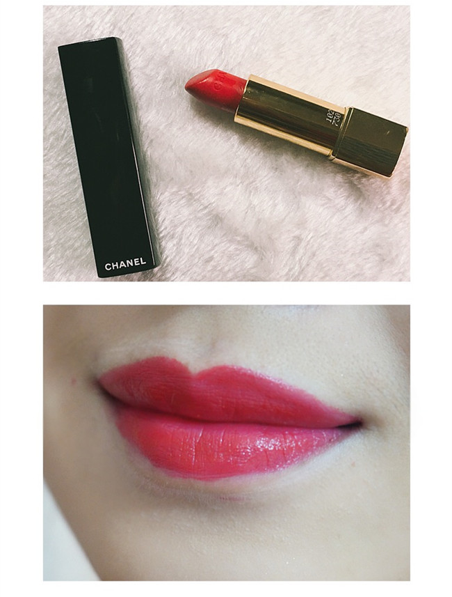这样，整个妆容就完成了，当然，如果你要自拍个啥的还能修修图，不过前期化妆铺垫好，后期修图更轻松。
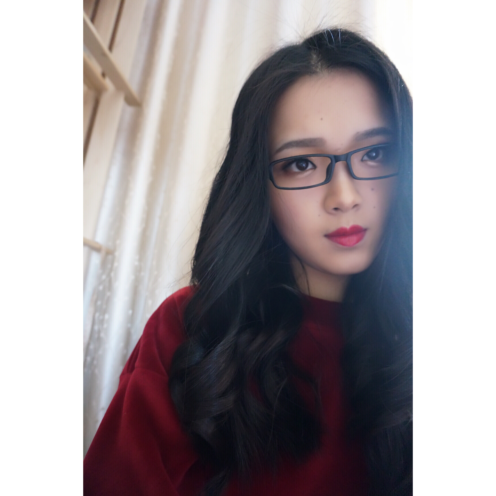头发也能起到修饰脸型的作用，自己用卷发棒卷一卷就能改善很多了，可以遮盖脸型的一些缺点。
总之，加上妆容的修饰以后，不仅仅是改善五官的比例和优缺点相互协调，也让佩戴镜框后沉闷的面部有了一丝生气。如果你看到这里，并且想了解更多的妆容技巧、美妆资讯等等可以关注我的个人原创微信公众号：夏吉吉。
http://weixin.qq.com/r/SDrfx9nEy4S0rZ2k929a (二维码自动识别)
此篇妆容内容已经更新至微信号并有详细的用品清单感兴趣的可以移步查看，我也会在微信公众号后台与大家互动，大家可以积极留言。
另外特此声明：未经本人允许，不得私自转载本人任何原创内容，一经发现，违者必严肃追究。